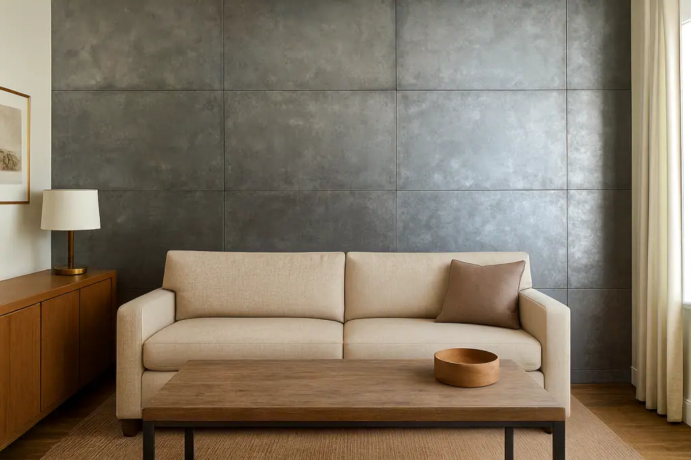
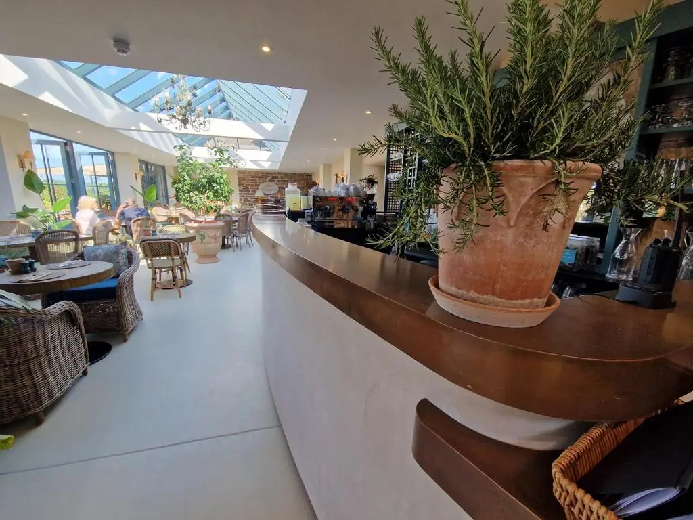

Zinc wall panels from Halman Thompson combine refined style with exceptional craftsmanship. Suitable for both domestic and commercial spaces, these wall panels deliver a perfect balance between decorative appeal and long-lasting practicality. Whether you’re looking to create a modern interior feature wall, a bold exterior façade, or a sleek industrial design accent, our bespoke zinc wall panels are built to impress.
Crafted from premium-quality zinc sheets , our zinc wall panel UK range offers a timeless metallic look that enhances any setting. With its dark-silver tone and soft satin sheen, zinc complements a wide range of design styles, from contemporary to traditional. Durable, elegant, and easy to clean, zinc is ideal for homes, restaurants, hotels, offices, and retail environments.
Contact our team for a free personalised zinc wall panel quote .

Hand made in the UK
Cut to size
Every zinc wall panel we produce is made to measure. At Halman Thompson, our expert team ensures each panel is precisely measured and crafted for a perfect fit. Whether you need large wall sections, small feature panel inserts, or full wall coverings for kitchens, offices, or commercial spaces, we’ll create the exact size, style, and thickness to meet your unique requirements.
All zinc panels are laser cut to any shape, up to a maximum of 2000mm x 1000mm. For larger wall areas, multiple panels can be created and joined seamlessly, providing a consistent, unified look across your entire design.

Ready to fit
Bespoke zinc wall panels
Ready to go
Your bespoke zinc wall panels will arrive fully prepared, finished, and ready for installation. Each wall panel is handcrafted to precision by our expert artisans in our UK workshop using high-quality zinc sheets.
UK delivery is included within the price and our typical turnaround time is 5–6 weeks from order confirmation.
Request a fast, free bespoke quotation for your custom-made zinc wall panels. If you’re a business, please use our Bespoke Quote for Businesses form .
Our bespoke zinc wall panels are custom-made to your exact design and style preferences. Choose from natural zinc or aged options that are hand-aged to achieve the finish you desire. Our Lightly Aged Zinc and Antique Zinc finishes add depth and character, making each wall panel a unique work of art. As standard, every zinc panel is then finished with a gloss or matte lacquer, but you can opt for an unlacquered finish to allow the zinc to develop its own unique patina over time, if you prefer.
All zinc wall panels can be laser cut to any size or shape (maximum 2000mm x 1000mm). When used to cover larger spaces, we will hand-age the zinc panels together for a consistent patina across all surfaces. Whether used for feature walls, partitions, accent surfaces, or ceiling panels, our handcrafted products bring both function and beauty to any project.
Our zinc wall panels are versatile and durable. They create a stunning focal point on any indoor or outdoor wall space, from kitchens, bathrooms, gardens, and offices to hospitality settings, commercial buildings, and exterior zinc cladding .
Why choose a zinc wall panel?
A zinc wall panel from Halman Thompson is a durable and stylish choice that enhances any space with a touch of modern sophistication. These custom metal wall panels provide a robust surface that’s resistant to moisture, corrosion, and daily wear – perfect for interior and exterior environments alike.
Use them to add visual impact to your home or business: from hygienic zinc splashbacks in kitchens, feature walls in living areas and statement pieces in reception spaces to industrial backdrops in restaurants, hotels and bars. They can also be used as metal shower panels or bathroom wall panels, offering a waterproof surface that’s both practical and decorative. Pair them with our zinc wall art for a coordinated look, or use them as a seamless alternative to zinc tiles for larger surfaces.
Thanks to their trendy dark-silver colour and satin finish, our zinc wall panels make an elegant alternative to aluminium or stainless steel. They are also very low-maintenance and only require simple cleaning to maintain their beautiful appearance.
Fitting your handcrafted zinc wall panels
Halman Thompson’s zinc wall panels can be installed with ease. Zinc is lightweight which makes installation simple—whether you use standard epoxy resins, liquid nail adhesive, or mechanical fixings. For the best results, we recommend preparing your wall before fitting and ensuring the surface is smooth and flat. Once fixed to the wall, the zinc panels require minimal maintenance to maintain their aesthetic appeal.
Looking after your zinc wall panel
Caring for your zinc wall panel is simple. Wipe the panel clean using a soft cloth and mild soapy water, avoiding harsh abrasives or chemicals. With proper care, they’ll retain their unique appearance and finish for many years. Full care instructions are included with every order, so you’ll know exactly what to do.
Buy zinc wall panels from Halman Thompson
If you’re looking to buy zinc wall panels that combine beauty, practicality, and quality, Halman Thompson can help. Every zinc panel is made to order, ensuring a one-of-a-kind product made to meet your unique specifications.
Request a free, no-obligation quotation or get in touch with our expert team for advice on our bespoke zinc wall panels.
Bars, balustrades, staircases, worktops, cladding and pieces that don’t have a name yet. Our designers and craftspeople work in brass, copper, zinc and steel, and alongside wood.